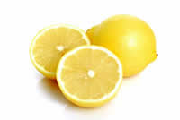
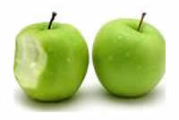
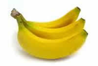

Turn up the Juice
Yum is one of the largest specialist juice stockists in the United Kingdom. We specialise in bringing you the freshest, most-refreshing, most exiting and healthy juices available over the Internet and to your door.
Choose from an incredible range of types and flavours: we have fruit, berry, vegetable, we have juices that will wake you up, knock you over, keep you health and keep you looking as slim and fit as you have ever looked.
Keep the Juice Flowing
We can handle orders of any size: from a few cartons to full-on wholesale. Delivery is free for orders over £100. Orders under £100 cost £3 per carton. All orders are delivery guaranteed within 3 working days.
We offer a satisfaction or money back guarantee. If you are unhappy with any of our products, all you have to do is return them and we will give you a full refund. All returns must be made within seven days of purchase. Terms and conditions apply.
The last Drop of Juice
All of our juices are made from only the best organic products. And all of our packaging is 100% recyclable.
Yum was voted in the Green Suppliers top 100 eco-friendly companies in 2010/11